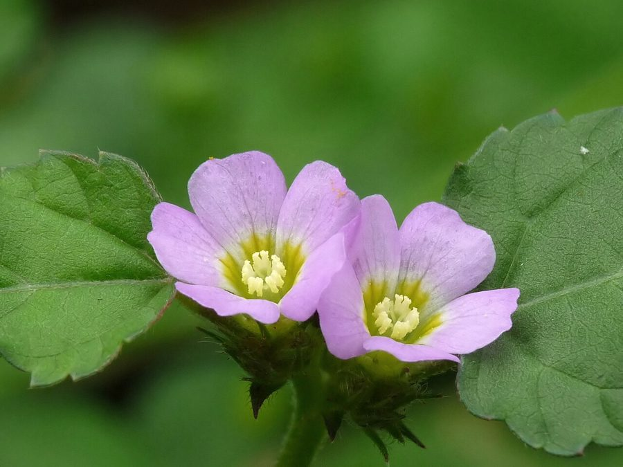

बिलपटChocolate Weed
Melochia corchorifolia · Malvaceae · FLR-0227

- Scientific name वैज्ञानिक नाम
- Melochia corchorifolia L.
- Family कुल
- Malvaceae
- Hindi हिंदी
- बिलपट
- Local names स्थानीय नाम
- bilpat, bil pat, chocolate weed, melochia
- Status here यहाँ की स्थिति
- native
- Movement आवागमन
- Resident, here all year
- Known from कहाँ दर्ज
- Others have published records from the wider Awadh–Purvanchal plain, none yet from Basti–Ayodhya अवध–पूर्वांचल से दूसरों के प्रकाशित अभिलेख, बस्ती–अयोध्या से अभी नहीं
- IUCN IUCN
- not evaluated
- Review समीक्षा
- audited and independently read
When to look कब देखें
Expected mainly in June, July, August, September, October, November, December. मुख्यतः जून, जुलाई, अगस्त, सितंबर, अक्टूबर, नवंबर, दिसंबर में अपेक्षित।
बिलपट / Chocolate Weed
Melochia corchorifolia L. — Malvaceae
बिलपट — गर्मी और बरसात की एक सामान्य खरपतवार जो बस्ती के धान-गेहूँ की फसलों की मेड़ों और नम खेतों में उगती है। इसके सूक्ष्म पत्ते जूट (Corchorus) के पत्तों से मिलते हैं, जिससे इसका वैज्ञानिक नाम बना है। फूल छोटे, गुलाबी या लाल रंग के होते हैं, जो पहलेदार फलियों में बदल जाते हैं जो पहलेदार अनाज जैसी दिखती हैं। यह पौधा मिठाई की खुशबू से जुड़ी परंपरागत औषधि के लिए जाना जाता है।
Quick Identification त्वरित पहचान
| Feature | Description |
|---|---|
| Form | Erect annual herb, 30–80 cm tall, branched, soft-hairy |
| Leaves | Ovate to linear-lanceolate, 3–8 cm long, toothed, soft, resembling jute leaves |
| Flowers | Small, pink to red, 4–6 mm diameter, clustered in terminal pyramidal heads |
| Fruit | A 5-lobed capsule, deeply furrowed, with hard walls, 6–8 mm diameter |
| Stem | Hairy, greenish or reddish, cylindrical |
Field tip: Look for a soft-hairy herb with jute-like leaves and clusters of small pink flowers arranged in a pyramidal inflorescence. The distinctive hard, furrowed fruit is a reliable identifying feature.
हिंदी — कैसे पहचानें: पत्तियाँ जूट जैसी, गुलाबी फूलों का गुच्छा, फल पहलेदार और कठोर। नम खेतों में मिलता है।
Morphology आकारिकी
Biometrics (specimens from monsoon fields, Basti):
| Feature | Measurement |
|---|---|
| Plant height | 30–80 cm |
| Leaf length | 3–8 cm |
| Flower diameter | 4–6 mm |
| Fruit diameter | 6–8 mm |
| Lobes on fruit | 5 |
Stem and bark: Hairy, terete, greenish or purplish. Base woody in older plants.
Leaves: Alternate, ovate to lanceolate, 3–8 cm long, with fine serrations, covered in soft hairs, resembling those of Corchorus.
Flowers: Small, arranged in dense, terminal pyramidal heads (cymes); pink to red color; five petals.
Fruit: A 5-lobed capsule with deep furrows between lobes, hard woody texture, 6–8 mm diameter.
Behaviour & Ecology व्यवहार और पारिस्थितिकता
A light-loving, thermophilic annual that thrives in the warm, moist conditions of monsoon eastern UP. Establishes well in crop fields, especially rice, and is one of the most troublesome monsoon weeds. The plant flowers prolifically and produces abundant seed. It is a host plant for several insects.
Life Cycle / Phenology जीवन चक्र
| Month / Season | Event |
|---|---|
| May–June | Seed germination after pre-monsoon rains |
| July–August | Rapid growth during monsoon |
| August–September | Flowering begins |
| September–October | Peak flowering and fruit set |
| October–November | Seed ripening and dispersal |
| November onwards | Plant senescence; seeds overwinter |
One season.
हिंदी: जून-जुलाई में अंकुरण, अगस्त-सितंबर में फूल, अक्टूबर तक बीज तैयार।
Associated Species / Interactions संबंधित प्रजातियाँ
- Pollinators: Small bees and flies visit the flowers.
- Larval host: Butterfly and moth caterpillars feed on leaves.
Pests and Diseases कीट और रोग
- Leaf beetles and grasshoppers feed on foliage.
- Powdery mildew in humid conditions.
Agricultural / Human Relevance कृषि प्रासंगिकता
Today: A common weed of monsoon paddy and maize fields in eastern UP. Competes vigorously with young rice seedlings. It is one of the five most troublesome weeds of the rice-wheat system. Farmers control it by hoeing in early growth stages or by allowing it to be overwhelmed by the crop.
Control: Early weeding (20–30 days after crop establishment) is effective; prevention through clean seed and stale seedbeds helps.
हिंदी: धान की फसल में यह बहुत परेशान करने वाली खरपतवार है। जून-जुलाई में निकलना चाहिए।
Expected Locally स्थानीय रूप से अपेक्षित
Not a field record. Written from published accounts for eastern Uttar Pradesh. No confirmed local sighting yet — if you have seen it, that is what the atlas needs.
अभी तक स्थानीय पुष्टि नहीं। यह विवरण प्रकाशित स्रोतों से है, किसी अवलोकन से नहीं।
Expected in rice fields, maize fields, and marshy margins throughout Basti district during the monsoon (June–November). GBIF holds published records from these districts.
Distribution वितरण
Global range: A pantropical weed of Asia, Africa and the Americas; long established in India.
In India: Warm regions, especially Indo-Gangetic plain, up to 1,500 m.
In Uttar Pradesh: Very common in the plains and foothills.
In Basti district / eastern UP: Common weed of monsoon paddy and wetland crops; widely distributed.
Research Questions शोध प्रश्न
- How many seeds does one plant produce, and how far can they disperse?
- क्या बिलपट की पत्तियों को खाने वाले कोई कीट बस्ती में हैं? किन हालातों में ये कीट पौधे को नुकसान पहुँचाते हैं? — Survey insects on the plant.
- Can children observe the fruit-maturation process from flower to ripe seed? — Simple phenology study.
- How does early weeding (before 30 days) affect rice yield compared to late weeding? — Field trial.
- Does the hard fruit of Melochia remain viable after passing through cattle?
Similar Species मिलती-जुलती प्रजातियाँ
| Species | Key Difference | हिंदी | |
|---|---|---|---|
| Corchorus olitorius (Jute) | Leaves truly alternate (not opposite), larger plant; true jute used commercially | असली जूट — बड़ा पौधा, पत्तियाँ सच में जैसी | |
| [[country_mallow\ | Country Mallow]] (Sida cordifolia) | Heart-shaped leaves, not ovate; different flower and fruit structure | बला — दिल की पत्तियाँ |
Field rule: Chocolate Weed has jute-like leaves with small clustered pink flowers and hard, furrowed fruit. True jute (Corchorus) is a larger plant with commercial value.
Taxonomy & Classification वर्गीकरण
Original description. Described by Linnaeus in 1753 in Species Plantarum as Melochia corchorifolia, Vol. 2, p. 674. Type locality is tropical Americas.
Subspecies. Monotypic.
Family and order placement. Order Malvales, family Malvaceae, genus Melochia.
Phylogenetic notes. Melochia is related to Sida and other Malvaceae genera.
IUCN status rationale. Not evaluated. Widely naturalized; not threatened.
Photo Gallery फोटो गैलरी
No photos yet — add field photos to media/species/chocolate_weed/ and run node scripts/sync_photos.js.
Wanted photos:
- Plant in monsoon rice field
- Pyramidal flower clusters
- Hard, furrowed fruit close-up
- Young seedlings
References संदर्भ
- Linnaeus, C. (1753). Species Plantarum. Laurentii Salvii, Holmiae, Vol. 2, p. 674.
- Hooker, J.D. (1875). Flora of British India, Vol. 1.
- Duthie, J.F. (1903). Flora of the Upper Gangetic Plain.
- Yadav, R.P. & Malik, A. (1982). Weed flora of Uttar Pradesh. Indian Journal of Agricultural Sciences, 52(8), 512–523.
- Botanical Survey of India. State Flora Series: Flora of Uttar Pradesh. BSI, Kolkata.
- GBIF Occurrence Data — Melochia corchorifolia (2026).
Source file: species/flora/crops_associated/chocolate_weed.md